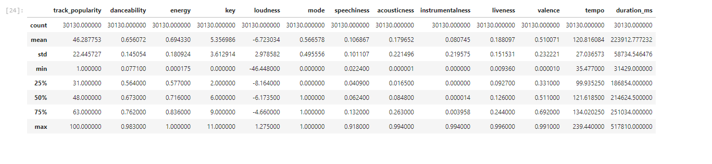
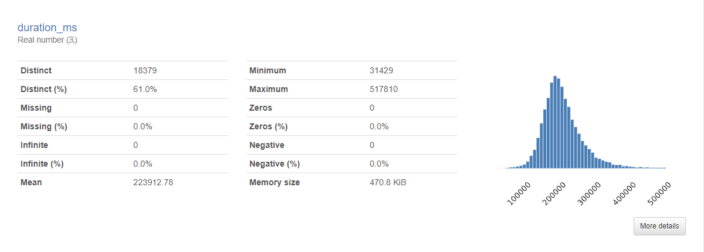
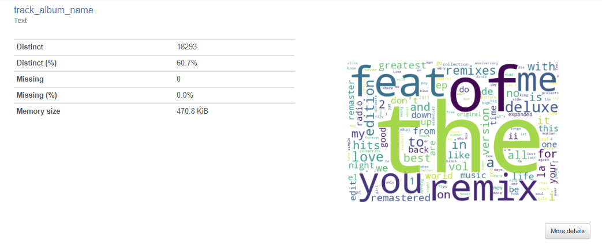
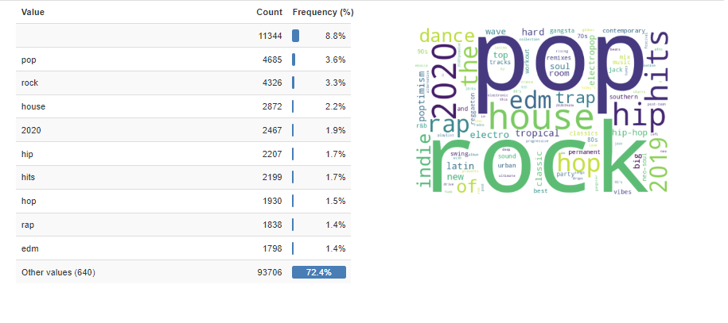

BTA 350 Analytics Project
Spotify Analysis created by:
- Nick Doan
Source Code
- link
Table of contents
- Project Section 1: Introduction
- Project Section 2: CONTEXT
- Project Section 3: Defining the problem
- Project Section 4: Data
- Project Section 5: Analysis
- Project Section 6: Evaluation
- Project Section 7: Interpretation
- Project Section 8: Recommendations
- Project Section 9: EXECUTIVE SUMMARY
- Project Section 10: Presentation
Project Section 1: Introduction
The data is called “30000 Spotify Songs” on Kaggle. It was uploaded by Joakim Arvidsson, a Grand Master on Kaggle. The data comes from Spotify via the spotifyr package. It is a package that pulls data from spotifiy’s API (https://www.rcharlie.com/spotifyr/). The data has several variables such as: track_id, track_name, track_artist, track_popularity, and track_album_id. The data is from Spotify. Spotify is a digital music streaming platform that offers millions of songs, podcasts, and other audio content. Spotify is offered across various platforms such as IOS and Android. My approach to the data has several components. The first is asking the question, “How can we get consumers to listen to more songs?” According to Invespodia, 95% of Spotify’s revenue comes from premium subscriptions (How Spotify Makes Money: Premium Services and Ad-Supported Services). A big part of why people pay for Spotify is for the ad-free experience, unlimited skips, personalized playlists, etc (The Consumer Decision Journey Report | Spotify Ads). Given this research we know that the more that we can get people to listen to music on the platform, the more likely they are to 1.) listen to music with ad-support or 2.) pay for a premium account. The second step of analyzing the data is to do exploratory data analysis. To find patterns and trends in the data that will help support Spotify take actionable steps to answer the business question I proposed. The third step will to do formal modeling. Fourth interpretation. Fifth communication.
Project Section 2: CONTEXT
The data is called “30000 Spotify Songs” on Kaggle. It was uploaded by Joakim Arvidsson, a Grand Master on Kaggle. The data comes from Spotify via the spotifyr package. It is a package that pulls data from spotifiy’s API (https://www.rcharlie.com/spotifyr/). The data has several variables such as: track_id, track_name, track_artist, track_popularity, and track_album_id. The data is from Spotify. Spotify is a digital music streaming platform that offers millions of songs, podcasts, and other audio content. Spotify is offered across various platforms such as IOS and Android. My approach to the data has several components. The first is asking the question, “How can we get consumers to listen to more songs?” According to Invespodia, 95% of Spotify’s revenue comes from premium subscriptions (How Spotify Makes Money: Premium Services and Ad-Supported Services). A big part of why people pay for Spotify is for the ad-free experience, unlimited skips, personalized playlists, etc (The Consumer Decision Journey Report | Spotify Ads). Given this research we know that the more that we can get people to listen to music on the platform, the more likely they are to 1.) listen to music with ad-support or 2.) pay for a premium account. The second step of analyzing the data is to do exploratory data analysis. To find patterns and trends in the data that will help support Spotify take actionable steps to answer the business question I proposed. The third step will to do formal modeling. Fourth interpretation. Fifth communication.
Project Section 3: Defining the problem
The problem definition is “How can Spotify improve the profit margins of their core business which is their digital music streaming services?” My business question definition is “How can we get consumers to listen to more songs and longer?” The problem's relevance is that Spotify has never been profitable for an entire fiscal year in its history. A company can only remain unprofitable for so long. It is crucial that Spotify find a path toward profitability. Analyzing Spotify’s user data is crucial as users are the main source of revenue for Spotify. By improving customer experience and retention, Spotify can improve its profit margins. Prioritizing data-driven insights will create a pathway toward sustainable profitability within its core music streaming business. The profitability challenge is not merely a financial problem; it is integral to Spotify's ability to innovate, invest in content acquisition, and expand its market share against competitors. Moreover, as the digital streaming landscape evolves with new entrants and changing consumer preferences, Spotify must adapt to remain relevant. Analyzing user data isn't just about understanding current behaviors; it is about anticipating future trends and evolving alongside user demands. By prioritizing data-driven insights and refining its platform to better serve user needs, Spotify can secure its position as a market leader and pave the way for sustainable profitability in an ever-changing digital music landscape.Project Section 4: Data
Libraries used:
import numpy as np
import pandas as pd
import seaborn as sns
import matplotlib.pyplot as plt
from ydata_profiling import ProfileReport
from collections import CounterMy dataset 30000 spotify songs” has over 30000 entries of data most of the data types are either float or object values. Most of the data is qualitative such as track name, track artists, etc. There are some quantitative variable such as duration, tempo, and liveliness.
df.info()
Index: 30130 entries, 0 to 32832
Data columns (total 23 columns):
# Column Non-Null Count Dtype
--- ------ -------------- -----
0 track_id 30130 non-null object
1 track_name 30130 non-null object
2 track_artist 30130 non-null object
3 track_popularity 30130 non-null int64
4 track_album_id 30130 non-null object
5 track_album_name 30130 non-null object
6 track_album_release_date 30130 non-null object
7 playlist_name 30130 non-null object
8 playlist_id 30130 non-null object
9 playlist_genre 30130 non-null object
10 playlist_subgenre 30130 non-null object
11 danceability 30130 non-null float64
12 energy 30130 non-null float64
13 key 30130 non-null int64
14 loudness 30130 non-null float64
15 mode 30130 non-null int64
16 speechiness 30130 non-null float64
17 acousticness 30130 non-null float64
18 instrumentalness 30130 non-null float64
19 liveness 30130 non-null float64
20 valence 30130 non-null float64
21 tempo 30130 non-null float64
22 duration_ms 30130 non-null int64
dtypes: float64(9), int64(4), object(10)
memory usage: 5.5+ MBI looked at several things for my exploratory data analysis. I first created a heatmap to find some correlations.
selected_columns = ['track_popularity',
'danceability',
'energy',
'loudness',
'speechiness',
'acousticness',
'instrumentalness',
'liveness',
'valence',
'tempo',
'duration_ms'
]
df_set = df[selected_columns]
plt.figure(figsize=(16, 8))
sns.set(style="whitegrid")
sns.heatmap(df_set.corr(),annot=True, cmap='YlGnBu')
I then looked for relationships for my qualitative variables like track_artists and track_name. I also looked at correlations for others variableslike genre and track popularity, but there was not much correlation. I also looked at the summary statistics. Analyzing the summary statistics did not offer any noticeable patterns given the nature of my data.
This data set is right for my business question. The data is derived directly from Spotify’s own API and the user that uploaded the data is a highly regarded member of the Kaggle community. With over 30,000 songs, this is a big enough data set to analyze and draw some analysis. I also looked at duration_ms to see if there was any correlation with track duration and popularity. Looking at the heatmap there was little to no correlation. What was interesting to me however was that the histogram for the data was right skewed. Further analysis demonstrated to me however that this was not meaningful since I had already determined there was little to no correlation between song duration and popularity.
Another thing I decided to explore was the frequency of certain words. Words in tracks, genres, artists, album id, playlist_name, and album names. I did not find it particularly insightful. Most of the high frequency words were words like “the”, “you”, “me”, etc. Playlist name however did yield some insight which led to exploring the relationship more in PowerBI.
 Here is the chart I analyzed in PowerBI when it comes to track popularity by playlist name.

Project Section 5: Analysis
The outcome variable for my analysis is track_popularity. For my analysis I decided to look at what variables could affect track popularity. I conducted most of my analysis using Python. I used several libraries:
import numpy as np
import pandas as pd
import seaborn as sns
import matplotlib.pyplot as plt
from ydata_profiling import ProfileReport
from collections import Counter
I cleaned the data using:
df.isnull().sum()This drops all null values from the data.
I then dropped all the zeros from track_popularity as I found it was skewing my data.df = df[df['track_popularity'] != 0] .df.to_csv('cleanedspotify.csv') For the first portion of my analysis, I first created a heatmap of the data to figure out which variables may be useful to look at that could be useful in answering the business question:
Looking the the heatmap I saw that energy and loudness have some correlation. I also saw dancebility and valence, and accousticness and energy. I created several scatterplots to look for correlations in my data.
correlation_coefficient = df_set['energy'].corr(df_set['loudness'])
sns.scatterplot(data= df_set, x= 'energy', y='loudness', hue='track_popularity')
plt.text(0.05, 0.95, f'Correlation Coefficient: {correlation_coefficient:.2f}', transform=plt.gca().transAxes)
A correlation of 0.68 is considered a strong positive correlation. We can also visually see this as most of the data is near each other in a linear line indicating that there is a positive correlation.